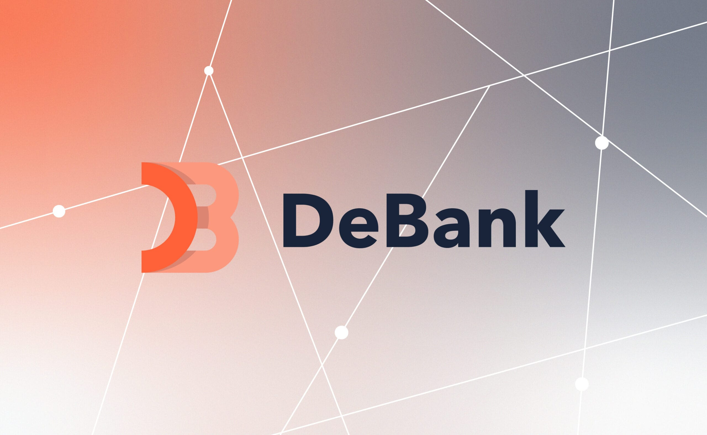

Best AI Website Creator
DeBank is a leading decentralized finance (DeFi) portfolio tracker and Web3 native social network that allows users to monitor, analyze, and manage their cryptocurrency assets across multiple blockchain networks. Launched in 2018, it has evolved from a simple asset dashboard into a comprehensive Web3 ecosystem dashboard, incorporating data analytics, communication tools, and social layers.
At its core, DeBank solves one of the biggest challenges in the modern crypto landscape: fragmentation. As the blockchain space expanded from Ethereum to dozens of Layer 1 and Layer 2 networks, users found their capital scattered across different wallets, blockchains, and decentralized protocols. DeBank acts as a unified command center, aggregating this data into a clean, human-readable interface.
📊 Comprehensive Portfolio Tracking
The primary feature of DeBank is its multi-chain portfolio tracker. By simply pasting a public wallet address or connecting a Web3 wallet (like MetaMask or Coinbase Wallet), users get an instant, real-time breakdown of their entire net worth across more than 40 different blockchains.
Unlike basic wallet interfaces that only show raw token balances, DeBank tracks capital deployed deep within DeFi protocols. It visualizes:
Staked Assets: Tokens locked in proof-of-stake networks or governance pools.
Yield Farming Pools: Capital deposited in automated market makers (AMMs) like Uniswap or Curve, tracking both principal and accrued rewards.
Lending and Borrowing Positions: Active loans on platforms like Aave or Compound, clearly displaying collateral values, debt balances, and liquidation prices.
NFT Collections: Visual galleries of non-fungible tokens owned by the wallet, along with estimated floor prices.
🔍 On-Chain Data Analytics and Intelligence
Beyond personal asset tracking, DeBank serves as a powerful on-chain data analytics platform. In Web3, all transactions are public, and DeBank leverages this transparency to provide deep insights into market movements and whale behavior.
Users can utilize the platform to spy on or learn from "whales" (individuals or entities holding massive amounts of crypto). By analyzing high-performing wallets, smaller investors can track what assets sophisticated traders are buying, selling, or farming. DeBank also ranks protocols by Total Value Locked (TVL) and monitors user growth trends, helping investors distinguish between fading apps and rising DeFi ecosystems.
💬 The Web3 Social Layer: DeBank Hi and Stream
Recognizing that decentralized finance is deeply tied to community, DeBank expanded into the social media space by introducing DeBank Stream and DeBank Hi. This transformation aims to create a Web3 alternative to traditional social platforms like X (formerly Twitter).
DeBank Stream: A decentralized blogging and social feed where users post updates, share market analysis, and discuss trends. What makes Stream unique is its financialized architecture. Posts are valued based on the collective on-chain net worth of the users who interact with them. Users can "mint" posts, and creators are rewarded based on the genuine traction and financial footprint of their audience.
DeBank Hi: A Web3 native instant messaging protocol. To combat the rampant spam and phishing attempts found on platforms like Discord and Telegram, DeBank Hi introduces an economic barrier. To send a message to someone who doesn't follow you, you must pay a fee set by the recipient. This monetizes attention and ensures that only high-value or highly intentional messages break through the noise.
🛡️ Security Tools: Token Approvals and Risk Management
Security is a constant concern in decentralized finance, where malicious smart contracts can drain user funds. DeBank provides essential built-in security utilities to help users mitigate these risks, most notably its Token Approval Management tool.
When users interact with DeFi applications, they must grant "approvals" allowing smart contracts to move their tokens. If a protocol is later hacked or turns out to be a scam, those active approvals leave the user's wallet vulnerable. DeBank allows users to instantly review every smart contract they have ever authorized across all connected chains. With a few clicks, users can revoke or decrease these allowances, effectively cutting off access to their funds from old or untrusted protocols.
🌐 The Layer 2 Evolution: DeBank Chain
To support its growing ecosystem of social interactions, messaging fees, and data tracking, DeBank launched its own dedicated network, DeBank Chain. Built as an Optimistic Rollup on top of the Ethereum ecosystem, DeBank Chain is designed to minimize transaction costs (gas fees) for social interactions.
By operating its own ledger, DeBank can handle millions of micro-transactions—such as liking a post, sending a message tip, or updating a profile—for fractions of a cent, making a fully financialized social network economically viable for daily users.
⚖️ The Pros and Cons of Using DeBank
To see how DeBank stacks up as a tool, consider its main advantages and limitations:
Advantages
Limitations
All-in-One Dashboard: Eliminates the need to open dozens of different DeFi sites to see your balances.
Privacy Trade-offs: Because wallets are public, anyone who knows your address can see your entire portfolio and net worth on DeBank.
Zero Cost: The core portfolio tracking and analytics features are completely free to use.
Centralized Frontend: While the data is on-chain, the visual interface is managed by a centralized company.
Multi-Chain Native: Supports almost every major EVM (Ethereum Virtual Machine) compatible chain out of the box.
Learning Curve: The interface is dense and can be overwhelming for total crypto beginners.
💡 Summary of Why It Matters
DeBank has transitioned from a niche asset tracker into a fundamental piece of Web3 infrastructure. It empowers crypto users by transforming raw, messy blockchain data into an organized, actionable financial dashboard. By blending portfolio management, security tools, and an economically incentivized social layer, DeBank provides a glimpse into the future of how people will manage their digital wealth and interact online.
Best AI Website Creator